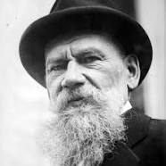

Lev Nikolayeviç Tolstoy
9 Eylül 1828’de Moskova yakınlarında bulunan Tula’daki Yasnaya Polyana Malikanesi’nde zengin
bir ailenin çocuğu olarak dünyaya geldi. İki yaşında annesini, dokuz yaşında babasını
kaybetti ve akrabaları tarafından yetiştirildi. 1844’te Kazan Üniversitesi’ne girdi
fakat resmî eğitime duyduğu tepkiyle 1847’de Yasnaya Polyana’ya geri dönerek kendi
kendisini yetiştirmeye karar verdi. 1852’de orduya katıldı ve burada boş zamanlarında
yazmaya başladı. 1857’ye kadar Çocukluk, İlkgençlik ve Gençlik adlarında üç ciltlik
otobiyografik romanını tamamladı. 1854’te Kırım Savaşı’na katılan Tolstoy, buradaki
tecrübelerinden yola çıkarak Sivastopol’u kaleme aldı. 1857’de Fransa, İtalya ve
İsviçre’yi kapsayan ilk Avrupa seyahatine çıktı ve eğitim kurumlarıyla ilgili bilgi
topladı. Rusya’ya dönüşünde köylü çocuklar için bir okul açtı. 1859’da Aile Mutluluğu
adlı romanını yazdı. 1860’ta tekrar Avrupa gezisine çıktı ve Almanya, Fransa, İngiltere
ve İtalya’da eğitim kurumlarıyla ilgili araştırmasını derinleştirdi. Bu dönemde kendine
ait ahlâk felsefesi de biçimlenmeye başlamıştı. 1862’de Sofya Andreyevna Behrs’le evlendi.
1863’te yazmaya başladığı ve başyapıtı olarak kabul edilen Savaş ve Barış’ı 1869’da
tamamladı. Romanın başarısından cesaretle, 1873 ila 1877 arasında ikinci büyük romanı
Anna Karenina’yı yazdı. 1880’den itibaren devlete ve kiliseye ağır eleştiriler
yönelteceği kitaplar yazmaya başladı ve Tolstoyculuk düşüncesinin yapıtaşlarını
oluşturdu. 1886’da İvan İlyiç’in Ölümü’nü, 1889’da Kroyçer Sonat’ı yayımladı.
1895’te Efendi ile Uşağı’nı yazdı. Aynı yıl Kilise’ye ağır eleştiriler yönelttiği
son büyük romanı Diriliş’i yazmaya başladı; 1899’da yayımlanan roman,
Rus Ortodoks Kilisesi’nden aforoz edilmesine sebep oldu. Son romanı Hacı Murat’ı
1896’da yazmaya başladı; 1904’te tamamlayacağı eser, ancak ölümünden sonra yayımlanacaktı.
Tolstoy 1900’den sonra zamanının çoğunu din, toplum, ahlâk, sanat konularındaki
görüşlerini anlatan yazılar yazmaya ayırdı. Bu dönemde, yazar kimliğinin yanı sıra
ruhani ve ahlâki bir lider olarak da ün saldı. Hayatı ile fikirleri arasında tutarlılık
sağlamak amacıyla, giderek daha sade bir yaşam sürmeye başladı. Önce içkiyi ve
tütünü bırakıp köylüler gibi giyinmeye başladı, ardından ölümünden sonra mal varlığını
köylülere bırakmaya karar verdi. Mülkiyet konusundaki radikal fikirleri nedeniyle
ailesiyle, özellikle de karısıyla arası açıldı. Bu anlaşmazlık, son yıllarını gitgide
artan bir psikolojik sıkıntı içinde geçirmesine sebep oldu. 1910 sonbaharında
içinde bulunduğu şartlara daha fazla dayanamayarak küçük kızını ve doktorunu
yanına alıp evi terk etti ve bir süre sonra, 20 Kasım’da Astapovo’da zatürreeden öldü.
Cenazesi iki gün sonra, binlerce kişinin katıldığı bir törenle Yasnaya Polyana’da
defnedildi.